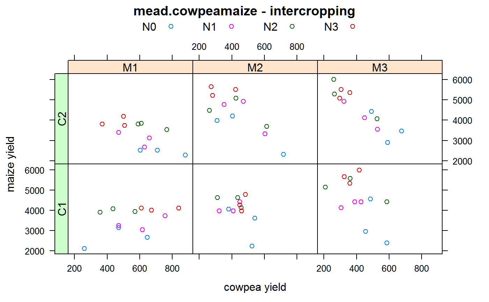

mead.cowpeamaize.RdIntercropping experiment of maize/cowpea, multiple nitrogen treatments.
A data frame with 72 observations on the following 6 variables.
blockblock, 3 levels
nitronitrogen, 4 levels
cowpeacowpea variety, 2 levels
maizemaize variety, 3 levels
cyieldcowpea yield, kg/ha
myieldmaize yield, kg/ha
An intercropping experiment conducted in Nigeria. The four nitrogen treatments were 0, 40, 80, 120 kg/ha.
Roger Mead. 1990. A Review of Methodology For The Analysis of Intercropping Experiments. Training Working Document No. 6. CIMMYT. http://repository.cimmyt.org/xmlui/handle/10883/868
Roger Mead, Robert N Curnow, Anne M Hasted. 2002. Statistical Methods in Agriculture and Experimental Biology, 3rd ed. Chapman and Hall. Page 390.
library(agridat) data(mead.cowpeamaize) dat <- mead.cowpeamaize # Cowpea and maize yields are clearly in competition libs("latticeExtra") useOuterStrips(xyplot(myield ~ cyield|maize*cowpea, dat, group=nitro, main="mead.cowpeamaize - intercropping", xlab="cowpea yield", ylab="maize yield", auto.key=list(columns=4)))# Mead Table 2 Cowpea yield anova...strongly affected by maize variety. anova(aov(cyield ~ block + maize + cowpea + nitro + maize:cowpea + maize:nitro + cowpea:nitro + maize:cowpea:nitro, dat))#> Analysis of Variance Table #> #> Response: cyield #> Df Sum Sq Mean Sq F value Pr(>F) #> block 2 73014 36507 2.8019 0.071083 . #> maize 2 409446 204723 15.7122 6.298e-06 *** #> cowpea 1 6013 6013 0.4615 0.500319 #> nitro 3 113064 37688 2.8925 0.045320 * #> maize:cowpea 2 9910 4955 0.3803 0.685790 #> maize:nitro 6 67563 11261 0.8642 0.528246 #> cowpea:nitro 3 172403 57468 4.4106 0.008282 ** #> maize:cowpea:nitro 6 135379 22563 1.7317 0.135003 #> Residuals 46 599359 13030 #> --- #> Signif. codes: 0 '***' 0.001 '**' 0.01 '*' 0.05 '.' 0.1 ' ' 1#> nitro cowpea cyield #> 1 N0 C1 482.3333 #> 2 N1 C1 459.2222 #> 3 N2 C1 413.1111 #> 4 N3 C1 511.4444 #> 5 N0 C2 596.5556 #> 6 N1 C2 496.7778 #> 7 N2 C2 478.8889 #> 8 N3 C2 367.0000#> maize cyield #> 1 M1 581.9167 #> 2 M2 430.5000 #> 3 M3 414.5833# Bivariate analysis aov.c <- anova(aov(cyield/1000 ~ block + maize + cowpea + nitro + maize:cowpea + maize:nitro + cowpea:nitro + maize:cowpea:nitro, dat)) aov.m <- anova(aov(myield/1000 ~ block + maize + cowpea + nitro + maize:cowpea + maize:nitro + cowpea:nitro + maize:cowpea:nitro, dat)) aov.cm <- anova(aov(cyield/1000 + myield/1000 ~ block + maize + cowpea + nitro + maize:cowpea + maize:nitro + cowpea:nitro + maize:cowpea:nitro, dat)) biv <- cbind(aov.m[,1:2], aov.c[,2], aov.cm[,2]) names(biv) <- c('df','maize ss','cowpea ss','ss for sum') biv$'sum of prod' <- (biv[,4] - biv[,2] - biv[,3] ) /2 biv$cor <- biv[,5]/(sqrt(biv[,2] * biv[,3])) signif(biv,2)#> df maize ss cowpea ss ss for sum sum of prod cor #> block 2 0.290 0.0730 0.250 -0.058 -0.400 #> maize 2 18.000 0.4100 13.000 -2.600 -0.980 #> cowpea 1 0.027 0.0060 0.058 0.013 1.000 #> nitro 3 29.000 0.1100 25.000 -1.800 -0.980 #> maize:cowpea 2 1.100 0.0099 0.920 -0.099 -0.950 #> maize:nitro 6 1.300 0.0680 0.920 -0.200 -0.680 #> cowpea:nitro 3 0.240 0.1700 0.150 -0.130 -0.640 #> maize:cowpea:nitro 6 1.300 0.1400 1.300 -0.033 -0.079 #> Residuals 46 16.000 0.6000 14.000 -1.400 -0.460## df maize ss cowpea ss ss for sum sum of prod cor ## block 2 0.290 0.0730 0.250 -0.058 -0.400 ## maize 2 18.000 0.4100 13.000 -2.600 -0.980 ## cowpea 1 0.027 0.0060 0.058 0.013 1.000 ## nitro 3 29.000 0.1100 25.000 -1.800 -0.980 ## maize:cowpea 2 1.100 0.0099 0.920 -0.099 -0.950 ## maize:nitro 6 1.300 0.0680 0.920 -0.200 -0.680 ## cowpea:nitro 3 0.240 0.1700 0.150 -0.130 -0.640 ## maize:cowpea:nitro 6 1.300 0.1400 1.300 -0.033 -0.079 ## Residuals 46 16.000 0.6000 14.000 -1.400 -0.460